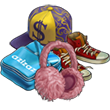
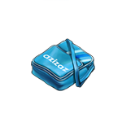
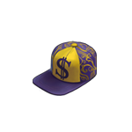
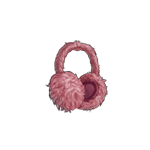
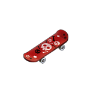
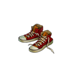

Получено: файл; исходный URL. Иллюстрация «Тинейджерская коллекция» из каталога ViveR_9, сопоставлена по точному названию; возможны отличия версий. Оригинальный файл без перекодирования; авторство отдельно не установлено. Страница: источник.

Тинейджерская коллекция
ВКонтакте; дата источника не указана- Тип
- Коллекции
- Версия и дата
- ВКонтакте; дата источника не указана
Элементы коллекции
















Данные по источнику · ВКонтакте · дата источника не указана
Предварительно: один источник; требует сверки. Требуется сверка.
- Награда
- Брёвна пальмы и 500 опыта
- Где копать
- Японский храм, флаг СССР, флаг Беларуси
- Состав (источник Zombie-island)
- Сумка; Кепка; Наушники; Скейт; Кеды.
- Награда (источник Zombie-island)
- 1 Бревна пальмы; 500 Опыт.
- Где копать Тинейджерскую коллекцию в Зомби Ферме лопатами
- Семейное гнездо; Ангар за зомбаксы; Ангар за монеты; Японский храм; Большая ёлка; Огромная ёлка; Флаг СССР; Флаг Беларуси; Футбольный куст; Клумба; Ворота западные; Ворота восточные; Трибуна голубая; Трибуна красная; Газон; Разметка; Голубой шар; Красный шар; Желтый шар; Зонтик; Осенний зонт; Летний зонт; Букет из шариков.
- Тинейджерскую коллекцию приносят Кладоискатели
- Кладоискател; Кладоискател с мозгами.
- Тинейджерская коллекция есть в Секретных кладах, ценностях и сокровищах
- Секретный клад; Сундук Черепуши; Бэйби-сюрприз; Сундук Чудовища 3; Чаша; Веселая карусель; Весенний фонтан; Биг-бен.
- Тинейджерская коллекция попадается при колдовании Палочками
- Палочка-выручалочка.
- Тинейджерская выпадает при разборе ресурсов Палочками
- Палочка-выручалочка; Ресурс Рок-рука; Черный мрамор; Белый мрамор; Зеленый мрамор.
- Тинейджерскую коллекцию можно привезти с Пиратских островов
- Пиратский сундук; Остров Сокровищ.
Данные по источнику · браузерная версия; платформа не указана · дата редакции не установлена
Предварительно: Содержимое списка: изображения и колонки могут терять смысл при извлечении текста; отдельная страница и дата не проверены. Подписи alt иногда ошибочны.. Требуется сверка.
- Текст карточки из каталога
- Брёвна пальмы и 500 опыта Сумка Кепка Наушники Скейт Кеды Где копать: Связка Шаров, Большой зонт Японский Храм, Бригада Элвиса, Флаг СССР, Флаг Беларуси, Повара, Клоун
Данные по источнику · Мой Мир (Mail.ru); историческая таблица · дата редакции не установлена
Предварительно: Источник сам использует знаки вопроса; не следует считать такие места подтверждёнными. Возможны изменения патча и платформы; независимость от других справочников не доказана.. Требуется сверка.
- Название в источнике
- Тинейджерская коллекция
- Где копать
- Ёлки на 20 ед, Дуб на 3 ед, Камни на 10 ед.
- Награда
- Брёвна Пальмы и 500 опыта
Данные по источнику · браузерная версия; на сайте указана игра ВКонтакте · дата редакции не установлена
Предварительно: Исторический текст; сильно совпадает со справкой Zommbie.at.ua, независимость не доказана. Отрицания и доступность могут измениться с патчем.. Требуется сверка.
- Где искать по странице «Зомбастики»
- Японский храм.
Данные по источнику · историческая браузерная версия, платформа не указана · 10.01.2014 — дата в каталоге; дата редакции материала неизвестна
Предварительно: Фанатский список без вероятностей и уточнения площадки; независимость от других источников не установлена.. Требуется сверка.
- Где искать по списку сайта
- Японский храм
- Оговорка
- Список может относиться к разным условиям, инструментам и периодам игры; не доказывает гарантированное выпадение. Заявления «только» и «невозможно» относятся лишь к времени и версии источника.
Связанные сущности
нет проверенных связей — требуется сверка.
Источники
- прочитано; проверка 2026-11-21
- прочитано: Zombie-island.moy.su; проверка 2026-11-21
- ZOMBIA: прочитана карточка в списке
- Ссылка на отдельную страницу; отдельно не проверена
- Zombiemail: строка таблицы коллекций; Мой Мир
- Зомбастики: прочитана соответствующая строка; возможная копия другого справочника
- ViveR_9: изображение в каталоге коллекций; совпадение названия
- zommbie.at.ua: где искать коллекции